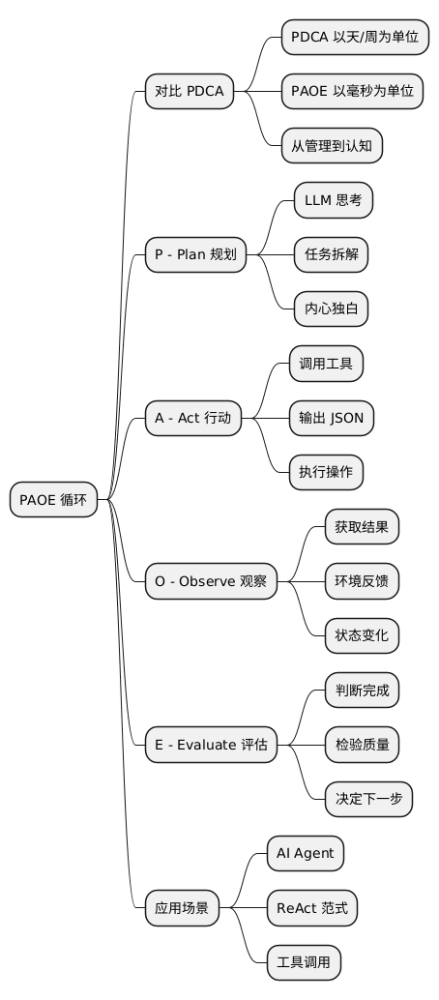

从 PDCA 到 PAOE：AI Agent 大脑里的循环
Posted on Thu 15 January 2026 in AI • 3 min read
从 PDCA 到 PAOE：AI Agent 大脑里的“死循环”
管理学大师戴明（Deming）如果还活着，看到 AI Agent 的运行日志，估计会眉头一皱：“这孩子的 PDCA 循环怎么转得跟电风扇一样快？”
开篇：别拿管理那套管 AI
在职场混久了，你应该对 PDCA（Plan-Do-Check-Act）不陌生。这是质量管理的金科玉律，也是无数周报、月报的噩梦来源。它的核心逻辑是：谋定而后动，动完查一查，查完改一改。
人类的 PDCA 循环通常是以天、周甚至季度为单位的。
但如果你正在构建一个 AI Agent（智能体），你会发现 PDCA 有点不够用了。Agent 需要在一个 Token 生成的时间窗口内完成思考和决策。它需要的不是“管理”，而是“认知”。
在 AI Agent 的世界里（尤其是基于 ReAct 范式的 Agent），我们将这个循环升级为 PAOE： * Plan (规划/思考) * Act (行动/调用工具) * Observe (观察/获取结果) * Evaluate (评估/反思)
今天，我们就扒开 AI Agent 的大脑，看看这个 PAOE 循环是如何让大模型从一个“只会瞎聊的文科生”变成“能干活的理工男”的。
一、什么是 ReAct？不是 React.js
首先澄清一下，这里说的 ReAct 不是那个前端框架，而是 Reasoning + Acting（推理 + 行动）。这是 Google Research 在 2022 年提出的一种 Prompt 范式。
在 ReAct 出现之前，大模型只有两种状态： 1. 推理（Reasoning）：在那自言自语，思维链（CoT）很强，但手断了，干不了活。 2. 行动（Acting）：直接输出 API 调用，但脑子经常短路，不知道为什么要调。
ReAct 把这两者结合了起来。简单说就是：一边碎碎念（思考），一边动手（干活）。
而 PAOE，就是 ReAct 机制在工程落地时的具体表现形式。
二、详解 PAOE 循环：Agent 的心流
让我们通过一个场景来理解 PAOE。 用户指令：“帮我查一下今天北京的天气，如果不适合出门，就推荐一部电影。”
1. Plan (P) —— 碎碎念的艺术
这是 LLM 的内心独白（Thought）。它不能直接给你答案，它得先拆解任务。
- Agent 独白： > “用户想知道北京天气。我得先调用天气工具。拿到天气后，我得判断是否‘适合出门’。如果不适合，我再调用电影推荐工具。”
2. Act (A) —— 脏活累活
LLM 决定要干什么后，会输出一个特定的格式（通常是 JSON 或特殊的关键词），告诉系统“我要用工具了”。
- Agent 输出：
>
Action: WeatherTool>Action Input: Beijing
注意，这时候 LLM 暂停了。它把控制权交给了你的代码（Runtime）。
3. Observe (O) —— 睁眼看世界
你的代码执行了 WeatherTool，拿到了 API 的返回值。这个返回值就是 Agent 的“感官输入”。
- 系统反馈：
>
Observation: 2°C, Heavy Snow (大雪), Wind Scale 6.
4. Evaluate (E) —— 灵魂拷问
Agent 拿到了观察结果，它需要再次思考（Reasoning），评估当前状态距离目标还有多远。
- Agent 独白： > “观测到外面是大雪，风很大。这绝对不适合出门。根据用户的指令，我现在需要推荐一部电影。”
（循环继续 -> Plan -> Act -> ...）
- Agent 输出：
>
Action: MovieRecommendationTool>Action Input: Cozy winter movies
...直到最后，Agent 评估认为任务完成，输出 Final Answer。
三、Talk is cheap, show me the code
原理听起来很简单，写起来其实就是一个 while 循环。
我们用 Python 手撸一个极简版的 PAOE Agent（不依赖 LangChain，还原第一性原理）：
import openai
import json
# 1. 定义工具 (Tools)
def get_weather(city):
return json.dumps({"condition": "Heavy Snow", "temp": 2})
def recommend_movie(genre):
return "《The Shining》(闪灵) - 适合雪天观看的温馨电影(误)"
tools_map = {
"get_weather": get_weather,
"recommend_movie": recommend_movie
}
# 2. 系统提示词 (Prompt Engineering)
SYSTEM_PROMPT = """
Answer the following questions as best you can. You have access to the following tools:
- get_weather(city): Get weather info.
- recommend_movie(genre): Recommend a movie.
Use the following format:
Question: the input question you must answer
Thought: you should always think about what to do
Action: the action to take, should be one of [get_weather, recommend_movie]
Action Input: the input to the action
Observation: the result of the action
... (this Thought/Action/Action Input/Observation can repeat N times)
Thought: I now know the final answer
Final Answer: the final answer to the original input question
"""
# 3. PAOE 循环引擎
def run_agent(question):
messages = [
{"role": "system", "content": SYSTEM_PROMPT},
{"role": "user", "content": f"Question: {question}"}
]
steps = 0
while steps < 5: # 防止死循环
# --- P & E (Plan & Evaluate) ---
# 调用大模型进行思考
response = openai.ChatCompletion.create(
model="gpt-4",
messages=messages,
stop=["Observation:"] # 关键！让模型在这就停下，等待我们喂数据
)
content = response.choices[0].message['content']
print(f"🤖 Agent:\n{content}")
messages.append({"role": "assistant", "content": content})
# 检查是否得到最终答案
if "Final Answer:" in content:
return content.split("Final Answer:")[1].strip()
# --- A (Act) ---
# 解析 Action 和 Action Input (这里简化处理，实际需正则解析)
# 假设 content 格式标准: "Action: get_weather\nAction Input: Beijing"
try:
action = content.split("Action: ")[1].split("\n")[0].strip()
action_input = content.split("Action Input: ")[1].split("\n")[0].strip()
except:
print("解析失败，Agent 发疯了")
break
# --- O (Observe) ---
print(f"🔧 Tool Execution: {action}({action_input})")
tool_func = tools_map.get(action)
observation = tool_func(action_input)
observation_msg = f"Observation: {observation}"
print(f"👀 System: {observation_msg}\n")
# 将观察结果喂回给 Agent
messages.append({"role": "user", "content": observation_msg})
steps += 1
return "任务超时或失败"
# 4. 运行
run_agent("北京今天天气怎么样？适合出门吗？")
代码里的玄机
- Stop Sequence (
Observation:)：这是控制权交接的关键。告诉 LLM：“说到这闭嘴，该我去干活了”。 - Context Appending：每一次循环，我们都把 Thought、Action 和 Observation 塞回历史记录。LLM 就像看着实验记录本的科学家，基于之前的实验结果做下一步推断。
四、PAOE 的坑与解
虽然 PAOE 看起来很美，但实战中你会遇到各种奇葩问题：
-
死循环 (Infinite Loop)：
- 现象：Agent 反复查询天气，反复确认，就是不输出结果。
- 解法：设置
max_iterations（最大循环次数），强制打断。
-
幻觉调用 (Hallucination)：
- 现象：Agent 调用了一个不存在的工具
Action: CallMom。 - 解法：在 Prompt 里严格限制工具列表，或者在代码里做容错处理，把“工具不存在”的报错信息作为 Observation 喂给它，让它自己纠错。
- 现象：Agent 调用了一个不存在的工具
-
上下文爆炸 (Context Overflow)：
- 现象：几轮下来，Prompt 长度超过了 Token 限制。
- 解法：对历史 Observation 进行摘要压缩，或者只保留最近 N 轮的详细思考过程。
五、总结：从管理者到观察者
PDCA 是我们在管理别人时用的工具。 PAOE 是我们在构建 Agent 时赋予它的元认知能力。
当我们从传统的 Software Engineering 转向 AI Engineering，我们的角色也变了：
我们不再是写死 if-else 的程序员，我们更像是 Agent 的教练。
我们设计它的思考框架（System Prompt），提供趁手的工具（Tools），然后坐在场边，看着它在 PAOE 的循环中跌跌撞撞地探索世界。
有时候它很蠢，有时候它又聪明得让你害怕。 但这，就是 AI 时代的乐趣所在。
💡 实战 Checklist
如果你想手搓一个 ReAct Agent，请检查：
- [ ] Prompt 结构：确保包含了 Thought, Action, Observation 的示例（Few-Shot）。
- [ ] Stop 词设置：确保 LLM 不会自己编造 Observation。
- [ ] 工具定义：工具的输入输出要是字符串，且描述要清晰（方便 LLM 理解）。
- [ ] 兜底机制：解析失败或工具报错时，Agent 能否恢复？
- [ ] 调试日志：打印出每一轮的 Thought，方便你理解它的脑回路。
扩展阅读
@startmindmap
* PAOE 循环
** 对比 PDCA
*** PDCA 以天/周为单位
*** PAOE 以毫秒为单位
*** 从管理到认知
** P - Plan 规划
*** LLM 思考
*** 任务拆解
*** 内心独白
** A - Act 行动
*** 调用工具
*** 输出 JSON
*** 执行操作
** O - Observe 观察
*** 获取结果
*** 环境反馈
*** 状态变化
** E - Evaluate 评估
*** 判断完成
*** 检验质量
*** 决定下一步
** 应用场景
*** AI Agent
*** ReAct 范式
*** 工具调用
@endmindmap

本作品采用知识共享署名-非商业性使用-禁止演绎 4.0 国际许可协议进行许可。